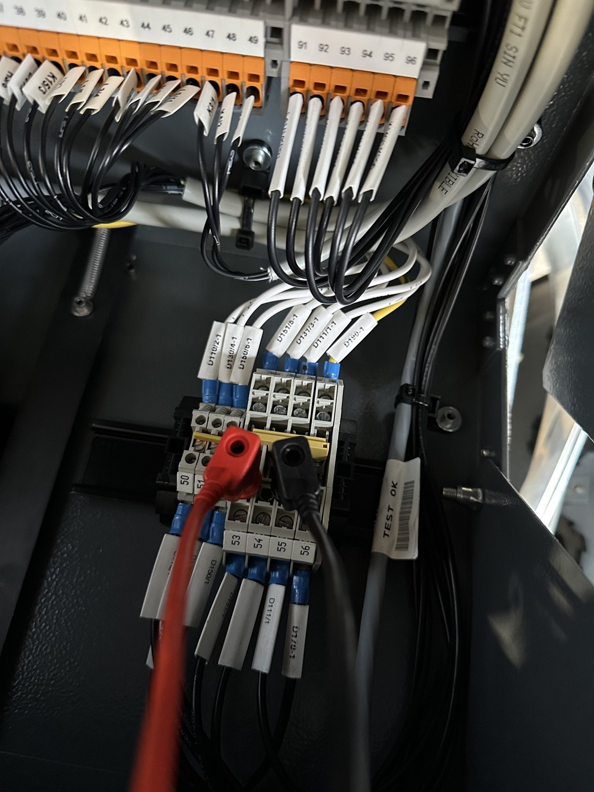

SPECIALIST SERVICES
Operational control, electrical safety and commissioning support for complex HV infrastructure.
Powertec supports projects from construction readiness through testing, commissioning, energisation and operational handover. Our role is to establish the controlled electrical conditions that allow work to progress safely, efficiently and in accordance with the applicable electrical safety rules.
SENIOR AUTHORISED PERSON SERVICES
Experienced operational control for live and commissioning environments.
Powertec provides Senior Authorised Person capability for projects where electrical safety, network control and disciplined switching are critical. We work across construction, commissioning and operational environments, taking responsibility for the safe configuration of networks and the issue and control of electrical safety documentation.
Our focus is on maintaining clear operational ownership, understanding the status of the network at all times and ensuring work only proceeds within properly established safe working conditions.
- HV operational control
- Switching planning and execution
- Isolation and earthing
- Safety document issue and control
- Permit and work-boundary management
- Network access management
- System status control
- Progressive energisation and restoration
- Permit-holder monitoring
- Operational handover

COMMISSIONING & ENERGISATION
Structured support from construction completion to operational status.
Complex commissioning programmes require more than switching support. They demand continuous coordination between electrical disciplines, commissioning teams, contractors and client representatives while network conditions change throughout the programme.
Powertec supports the operational interfaces that make testing possible: establishing isolations, applying earthing, defining work boundaries, controlling temporary configurations and ensuring systems are restored safely before the next stage of testing or energisation.
- Pre-energisation readiness
- Commissioning switching
- Testing isolations
- Temporary system configurations
- Progressive energisation
- Integrated Systems Testing interfaces
- Controlled transfer and restoration
- Operational handover
ELECTRICAL SAFETY MANAGEMENT
Practical electrical safety governance for high-risk environments.
Electrical safety on major projects is dynamic. System configurations change, multiple contractors work in parallel and temporary arrangements can create additional sources of supply and backfeed risk.
Powertec provides practical operational governance to maintain safe working conditions throughout these changes. This includes active oversight of permit holders, work boundaries, isolation requirements, safety documentation and the interaction between simultaneous commissioning activities.
- Safe systems of work
- Electrical safety documentation
- Work-boundary control
- Permit-holder oversight
- Simultaneous activity management
- Access control
- Isolation and earthing coordination
- Controlled restoration
HV PROJECT DELIVERY
Project capability beyond SAP provision.
Powertec has delivered HV project-management responsibilities across asset replacement, network refurbishment, commissioning and operational programmes within regulated utility environments.
Delivery responsibilities have included specialist resource mobilisation, project and commercial management, SAP duties, electrical safety, logistics, contractor coordination and direct client interfaces.
VIEW PROJECT EXPERIENCEHOW WE WORK
Controlled delivery from planning through handover.
Review
Confirm scope, network condition, interfaces, hazards and operational constraints.
Prepare
Develop switching, isolation, earthing, safety-document and access arrangements.
Control
Establish safe working conditions and coordinate access for testing and construction teams.
Energise
Execute controlled switching, progressive energisation and staged restoration.
Handover
Verify readiness, restore the network and support transition into operational status.